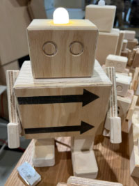
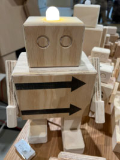

Het ontstaan
VOOR DE GROTE RENOVATIE VAN HET RIJKSMUSEUM WAREN DESTIJDS VEEL TRANSPORTKISTEN NODIG OM ALLE KUNSTSCHATTEN TE BEWAREN, MAAR NADAT DE RENOVATIE WAS AFGEROND HAD HET RIJKSMUSEUM ER GEEN GEBRUIK MEER VOOR. ZO IS STUDIO HAMERHAAI OP EEN CREATIEVE MANIER BEGONNEN AAN EEN UPCYCLING PROJECT. SINDSDIEN ZIJN DE KUNSTWAKERS TE KOOP VOOR IEDEREEN, ELK MET EEN EIGEN CODE ACHTEROP GESCHREVEN…
 

Code?
JE VRAAGT JE WAARSCHIJNLIJK AF, WAT VOOR CODE? DE KUNSTWAKERS HEBBEN ELK EEN EIGEN CODE DIE JE KAN INVOEREN OP DE SITE VAN STUDIO HAMERHAAI. MET DEZE CODE KAN JE ERACHTER GEKOMEN WELK KUNSTWERK VAN HET RIJKSMUSEUM DE KUNSTWAKER HEEFT BEWAAKT. ONDERSTAANDE KUNSTWAKER HEEFT DE CODE RW17447. DEZE KUNSTWAKER HEEFT EEN SCHILDERIJ BEWAARD UIT 1640. MISSCHIEN: KLIK OP HET SCHILDERIJ OM ER MEER OVER TE WETEN TE KOMEN.

Creatief initiatief
PERSOONLIJK VIND IK DE KUNSTWAKERS EEN CREATIEF EN COOL INITIATIEF. JE KAN NATUURLIJK VAN ALLES MET OUD HOUT MAKEN, MAAR EEN ROBOT KUNSTWERK ZOU JE NIET SNEL NOEMEN ALS MOGELIJKHEID. VERDER VIND IK DE CODE EEN ERG LEUKE TOEVOEGING, ELKE KUNSTWAKER HEEFT EEN EIGEN VERHAAL WAT JE ZELF KAN ONTDEKKEN.